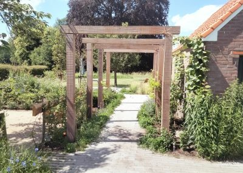

Tuinontwerp
Een ontwerp op maat dat past bij uw wensen en uw manier van leven. We adviseren over beplanting, rekening houdend met klimaat, bodem en onderhoud, en nemen bouwelementen, verlichting en beregening meteen mee.
Naast onze eigen ontwerpers werken we samen met Bladgoud tuinen.
